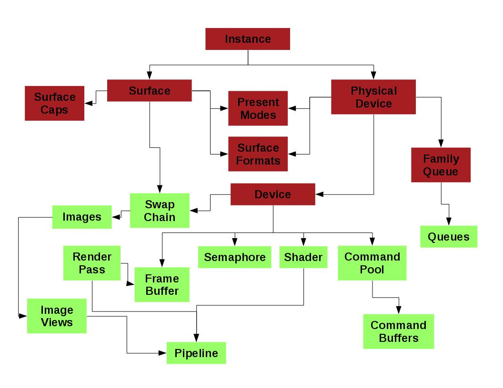
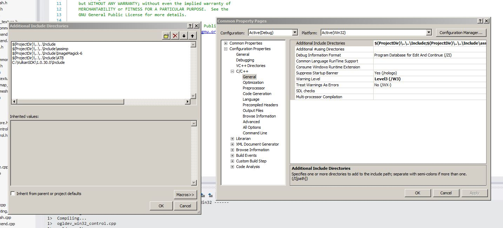
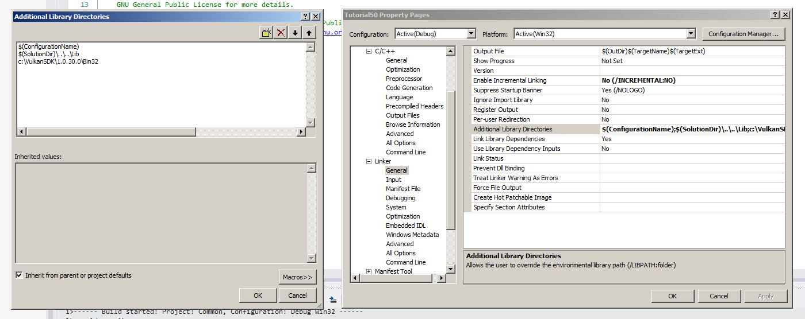

Background
You've probably heard by now quite a bit about Vulkan, the new Graphics API from Khronos (the non profit organization responsible for the development of OpenGL). Vulkan was announced in Feb-2016 and after 24 years with OpenGL it is a completely new standard and a departure from the current model. I won't go into many details about the various features of Vulkan only to say that in comparison to OpenGL it is much more low level and provides a lot of power and performance opportunities for the developer. But with great power comes great responsibility. The developer has to take charge of various aspects such as command buffer, synchronization and memory management that were previously the sole responsibility of the driver. Through the unique knowledge that the developer has about the way the application is structured, the usage of the Vulkan API can be tailored in a way to increase the overall performance of the system.
The thing that surprises people the most, IMHO, about Vulkan is the amount of code that must be written only to get the first triangle on the screen. Comparing this to the few lines we had to write in OpenGL in the first few tutorials this is a major change and becomes a challenge when one tries to write a tutorial about it. Therefore, as always with OGLDEV, I'll try to present the material step by step. We will develop our first triangle demo in a few tutorials, making additional progress in each one. In addition, instead of laying out the dozens of APIs in one long piece of code I'll present a simple software design that I hope will make it simpler for you to understand without imposing too much restrictions on your future apps. Consider this an educational design which you are free to throw away later.
We will study the core components of Vulkan one by one as we make progress throught the code so at this point I just want to present a diagram of the general picture:
This diagram is by all means not a complete representation. It includes only the major components that will probably be present in most applications. The connectors between the objects represent the dependencies between them at creation or enumeration time. For example, in order to create a surface you need an instance object and when you enumerate the physical devices on your system you also need an instance. The two colors roughly describe the software design that we will use. The dark red objects will go into something I call the "core" and the light green objects will go into the "app". We will later see why this makes sense. The application code that you will write will actually inherit from "app" and all of its members will be available for you for further use. I hope this design will provide a solid base to develop future Vulkan tutorials.
System Setup
The first thing we need to do is to make sure your system supports Vulkan and get everything ready for development. You need to verify that your graphics card supports Vulkan and install the latest drivers for it. Since Vulkan is still new it's best to check for drivers updates often because hardware vendors will probably fix a lot of bugs before everything stabilizes. Since there are many GPUs available I can't provide much help here. Updating/installing the driver on Windows should be fairly simple. On Linux the process may be a bit more involved. My main development system is Linux Fedora and I have a GT710 card by NVIDIA. NVIDIA provide a binary run file which can only be installed from the command line. Other vendors have their own processes. On Linux you can use the 'lspci' to scan your system for devices and see what GPU you have. You can use the '-v', '-vv' and '-vvv' options to get increasingly more info on your devices.
The second thing we need is the Vulkan SDK by Khronos, available here. The SDK includes the headers and libraries we need as well as many samples that you can use to get more info beyond what this tutorial provides. At the time of writing this the latest version is 1.0.30.0 and I urge you to update often because the SDK is in active development. That version number will be used throughout the next few sections so make sure you change it according to the version you have.
Linux
Khronos provides a package only for Ubuntu in the form of an executable run file. Executing this file should install everything for you but on Fedora I encoutered some difficulties so I used the following procedure (which is also forward looking in terms of writing the code later):
- bash$ chmod +x vulkansdk-linux-x86_64-1.0.30.0.run
- base$ ./vulkansdk-linux-x86_64-1.0.30.0.run --target VulkanSDK-1.0.30.0 --noexec
- base$ ln -s ~/VulkanSDK-1.0.30/1.0.30.0 ~/VulkanSDK
The above commands extract the contents of the package without running its internal scripts. After extraction the directory VulkanSDK-1.0.30.0 will contain a directory called 1.0.30.0 where the actual content of the package will be located. Let's assume I ran the above commands in my home directory (a.k.a in bash as '~') so we should end up with a '~/VulkanSDK' symbolic link to the directory with the actual content (directories such as 'source', 'samples', etc). This link makes it easier to switch your development environment to newer versions of the SDK. It points to the location of the headers and libraries that we need. We will see later how to connect them to the rest of the system. Now do the following:
- bash$ cd VulkanSDK/1.0.30.0
- bash$ ./build_examples.sh
Hopefully everything is OK so far so we want to create some symbolic links that will make the files we need for development easily accessible from our working environment. Change to the root user (by executing 'su' and entering the root password) and execute the following:
- bash# ln -s /home/<your username>/VulkanSDK/x86_x64/include/vulkan /usr/include
- base# ln -s /home/<your username>/VulkanSDK/x86_x64/lib/libvulkan.so.1 /usr/lib64
- base# ln -s /usr/lib64/libvulkan.so.1 /usr/lib64/libvulkan.so
What we did in the above three commands is to create a symbolic link from /usr/include to the vulkan header directory. We also created a couple of symbolic links to the shared object files against which we are going to link our executables. From now one whenever we download a new version of the SDK we just need to change the symbolic link '~/VulkanSDK' to the new location in order to keep the entire system up to date. To emphasis: the procedure as the root user must only be executed once. When you get a newer version of the SDK you will only need to extract it and update the symbolic link from your home directory. You are free to place that link anywhere you want but the code I provide will assume it is in the home directory so you will need to fix that.
Windows
Installation on Windows is simpler than on Linux. You just need to get the latest version from here, double click the executable installer and after agreeing to the license agreement and selecting the target directory you are done. I suggest you install the SDK under c:\VulkanSDK to make it compatible with the Visual Studio solution that I provide, but it is not a must. If you install it somewhere else make sure you update the include and link directories in the project files. See details in the next section.
Building and Running
Linux
My main development environment on Linux is Netbeans. The source code that accompanies all my tutorials contains project files which can be used with the C/C++ Netbeans download bundle. If you followed the above system setup procedure then these projects should work out of the box for you (and please let me know if there are any problems). If you are using a different build system you need to make sure to add the following:
- To the compile command: -I<path to VulkanSDK/1.0.30.0/x86_64/include>
- To the link command: -L<path to VulkanSDK/1.0.30.0/x86_64/lib> -lxcb -lvulkan'
Even if you don't use Netbeans I suggest you go into 'ogldev/tutorial50' after you unzip the tutorial source package and run 'make'. I provide the makefiles that Netbeans generates so you can check whether your system is able to build them or something is missing. If everything was ok you can now run 'dist/Debug/GNU-Linux-x86/tutorial50' from within 'ogldev/tutorial50'.
Windows
If you installed the SDK under 'c:\VulkanSDK' then the Visual Studio project files I supply should work out of the box. If you haven't or you want to setup a Visual Studio project from scratch then follow the steps below.
To update the include directory right click on the project in the solution explorer, go to 'Properties' and then to 'Configuration Properties -> C/C++ -> General'. Now you must add 'c:\VulkanSDK\<version>\Include' to 'Additional Include Directories'. See example below:

To update the link directory right click on the project in the solution explorer, go to 'Properties' and then to 'Configuration Properties -> Link -> General'. Now you must add 'c:\VulkanSDK\<version>\Bin32' to 'Additional Library Directories'. See example below:

While you are still in the linker settings go to 'Input' (just one below 'General') and add 'vulkan-1.lib' to 'Additional Dependencies".
General Comments
Before we get going I have a few comments about some of my design choices with regard to Vulkan:
Many Vulkan functions (particularly the ones used to create objects) take a structure as one of the parameters. This structure usually serve as a wrapper for most of the parameters the function needs and it helps in keeping the number of parameters to the function low. The Vulkan architects decided to place a member called sType as the first member in all these structures. This member is of an enum type and every structure has its own code. This allows the driver to identify the type of the structure using only its address. All of these enum code have a VK_STRUCTURE_TYPE_ prefix. For example, the code for the structure used in the creation of the instance is called VK_STRUCTURE_TYPE_INSTANCE_CREATE_INFO.
Whenever I declare a variable of one of these structure types the first member I update will be sType. To save time I won't comment about it later in the source walkthrough.
-
Another comment on these Vulkan structures - they contain quite a lot of stuff which we don't need in our first few steps. To keep the code as short as possible (as well as the text here...) I always initialize the memory of all structures to zero (using the struct = {} notation) and I will only set and describe the structure members that cannot be zero. I will discuss the stuff that I skipped in future tutorials as they become relevant.
Vulkan functions are either void or they return a VkResult which is the error code. The error code is an enum where VK_SUCCESS is zero and everything else is greater than zero. When it is possible I check the return value for errors. If an error occured I print a message to the console (on Windows there should be a message box) and exit. Error handling in real world applications tend to make the code more complex and I want to keep it as simple as possible.
Many Vulkan functions (particularly of creation type) can take a pointer to an allocator function. These allocators allow you to control the process of allocating memory that the Vulkan functions need. I consider this as an advanced topic and will not discuss it. We will pass NULL as the allocators so the driver will use its default.
Vulkan does not guarantee that its functions will be automatically exposed by the implementing library. This means that on some platforms you might get a segmentation fault when you call a Vulkan function because it turns out to be a NULL. In these cases you have to use vkGetInstanceProcAddr() to get the function address before it is used (remember that with OpenGL we had GLEW to save us from all this hassle). My personal experience with my driver was that only vkCreateDebugReportCallbackEXT() was not available. This function is only required for the optional validation layer. Therefore, I decided to take a risk and release the tutorial without fetching the addresses for all the functions that I used. If readers will report problems on their platforms I will update the code.
Every serious software has to deal with object deallocation or it will eventually run out of memory. In this tutorial I'm keeping things simple and not destroying any of the objects that I allocate. They are destroyed anyway when the program shuts down. I will probably revisit this topic in the future but for now just remember that almost every <vkCreate*() function has a corresponding vkDestroy*() and you need to be careful if you are destroying stuff while the program is running. You can find more information about it here.
Code Structure
Here's a short summary of the files that contain the code that we are going to review. The path relates to the root of the ogldev software package:
- tutorial50/tutorial50.cpp - location of the main() function.
- include/ogldev_vulkan.h - primary header for all of our Vulkan code. This is the only place where the Vulkan headers by Khronos are included. You can enable the validation layer here by uncommenting ENABLE_DEBUG_LAYERS. This file contains a few Vulkan helper functions and macros as well as the definition of the VulkanWindowControl class.
- Common/ogldev_vulkan.cpp - implementation of the functions defined in ogldev_vulkan.h
- include/ogldev_vulkan_core.h - declaration of the OgldevVulkanCore which is the primary class that we will develop.
- Common/ogldev_vulkan_core.cpp - implementation of the OgldevVulkanCore class.
- include/ogldev_xcb_control.h - declaration of the XCBControl class that creates a window surface on Linux.
- Common/ogldev_xcb_control.cpp - implementation of XCBControl.
- include/ogldev_win32_control.h - declaration of the Win32Control class that creates a window surface on Windows.
- Common/ogldev_win32_control.cpp - implementation of Win32Control.
Note that on both Netbeans and Visual Studio the files are divided between the 'tutorial50' and 'Common' projects.
Source walkthru
I hope that you successfully completed the above procedures and you are now ready to dive into the internals of Vulkan itself. As I said, we are going to develop our first demo in several steps. The first step will be to setup four important Vulkan objects: the instance, surface, physical device and logical device. I'm going to describe this by walking through my software design but you are welcomed to throw this away and just follow the Vulkan calls themselves.
The first thing we need to do is to include the Vulkan headers. I've added ogldev_vulkan.h as the primary Vulkan include file in my projects. This will be the only place where I will include the Vulkan header files and everything else will just include this file. Here's the relevant piece of code:
#ifdef _WIN32
#define VK_USE_PLATFORM_WIN32_KHR
#include "vulkan/vulkan.h"
#include "vulkan/vk_sdk_platform.h"
#else
#define VK_USE_PLATFORM_XCB_KHR
#include <vulkan/vulkan.h>
#include <vulkan/vk_sdk_platform.h>
#endifNote that we define different _PLATFORM_ macros for Windows and Linux. These macros enable the extensions that support the windowing systems in each OS. The reason that we include the headers like that is that on Linux they are installed in a system directory ( /usr/include/vulkan ) whereas on Windows they are installed in a standard directory.
Let's start by reviewing the class OgldevVulkanCore whose job is to create and maintain the core objects (note that I'm using red in order to mark all Vulkan structs, enums, functions, etc):
class OgldevVulkanCore
{
public:
OgldevVulkanCore(const char* pAppName);
~OgldevVulkanCore();
bool Init(VulkanWindowControl* pWindowControl);
const VkPhysicalDevice& GetPhysDevice() const;
const VkSurfaceFormatKHR& GetSurfaceFormat() const;
const VkSurfaceCapabilitiesKHR GetSurfaceCaps() const;
const VkSurfaceKHR& GetSurface() const { return m_surface; }
int GetQueueFamily() const { return m_gfxQueueFamily; }
VkInstance& GetInstance() { return m_inst; }
VkDevice& GetDevice() { return m_device; }
private:
void CreateInstance();
void CreateSurface();
void SelectPhysicalDevice();
void CreateLogicalDevice();
// Vulkan objects
VkInstance m_inst;
VkDevice m_device;
VkSurfaceKHR m_surface;
VulkanPhysicalDevices m_physDevices;
// Internal stuff
std::string m_appName;
int m_gfxDevIndex;
int m_gfxQueueFamily;
};This class has three pure Vulkan members (m_inst, surface and m_device) as well as a vector of Vulkan objects called m_physDevices (see the definition below). In addition, we have members to keep the application name, an index to the physical device we will be using and an index to the queue family. The class also contains a few getter functions and an Init() function that set's everything up. Let's see what it does.
void OgldevVulkanCore::Init(VulkanWindowControl* pWindowControl)
{
std::vector<VkExtensionProperties> ExtProps;
VulkanEnumExtProps(ExtProps);
CreateInstance();
#ifdef WIN32
assert(0);
#else
m_surface = pWindowControl->CreateSurface(m_inst);
assert(m_surface);
#endif
printf("Surface created\n");
VulkanGetPhysicalDevices(m_inst, m_surface, m_physDevices);
SelectPhysicalDevice();
CreateLogicalDevice();
}This function takes a pointer to a VulkanWindowControl object. We will review this object later. For now it suffices to say that this is an OS specific class whose job is to create a window surface where rendering will take place. As in OpenGL, the Vulkan core spec does not include windowing. This task is left to extensions and we have windowing extensions for all major operating systems. An extension is simply an addition to Vulkan which is not part of the core spec. Members of Khronos can publish their own extensions and add them to the registry. Driver vendors can decide which extension they want to implement. The developer can then query for the list of available extensions during runtime and proceed accordingly.
We start by enumerating all these extensions. This is done in the following wrapper function:
void VulkanEnumExtProps(std::vector& ExtProps)
{
uint NumExt = 0;
VkResult res = vkEnumerateInstanceExtensionProperties(NULL, &NumExt, NULL);
CHECK_VULKAN_ERROR("vkEnumerateInstanceExtensionProperties error %d\n", res);
printf("Found %d extensions\n", NumExt);
ExtProps.resize(NumExt);
res = vkEnumerateInstanceExtensionProperties(NULL, &NumExt, &ExtProps[0]);
CHECK_VULKAN_ERROR("vkEnumerateInstanceExtensionProperties error %d\n", res);
for (uint i = 0 ; i < NumExt ; i++) {
printf("Instance extension %d - %s\n", i, ExtProps[i].extensionName);
}
} The above function is a wrapper to the Vulkan API vkEnumerateInstanceExtensionProperties() which returns the extensions available on the system. The way we use this function is very common in Vulkan. The first call returns the number of extensions which we use to resize the extension vector. The second call retrieves the extensions themselves. The first parameter can be used to select a specific layer. Vulkan is structured in a way that allows vendors to add logic layers that do stuff like validation, extra logging, etc. You can decide at runtime which layer you want to enable. For example, while developing your application you can enable the validation layer and when distributing it to your users - disable it. Since we are interested in all the extensions we use NULL as the layer.
Once we get the extension list we just print it. If you want to do some additional logic on the extension list you can do it here. The reason that we print it is to make sure the extensions we enable in the next function are included. Next in the initialization process is the creation of the Vulkan instance:
void OgldevVulkanCore::CreateInstance()
{
VkApplicationInfo appInfo = {};
appInfo.sType = VK_STRUCTURE_TYPE_APPLICATION_INFO;
appInfo.pApplicationName = m_appName.c_str();
appInfo.engineVersion = 1;
appInfo.apiVersion = VK_API_VERSION_1_0;
const char* pInstExt[] = {
#ifdef ENABLE_DEBUG_LAYERS
VK_EXT_DEBUG_REPORT_EXTENSION_NAME,
#endif
VK_KHR_SURFACE_EXTENSION_NAME,
#ifdef _WIN32
VK_KHR_WIN32_SURFACE_EXTENSION_NAME,
#else
VK_KHR_XCB_SURFACE_EXTENSION_NAME
#endif
};
#ifdef ENABLE_DEBUG_LAYERS
const char* pInstLayers[] = {
"VK_LAYER_LUNARG_standard_validation"
};
#endif
VkInstanceCreateInfo instInfo = {};
instInfo.sType = VK_STRUCTURE_TYPE_INSTANCE_CREATE_INFO;
instInfo.pApplicationInfo = &appInfo;
#ifdef ENABLE_DEBUG_LAYERS
instInfo.enabledLayerCount = ARRAY_SIZE_IN_ELEMENTS(pInstLayers);
instInfo.ppEnabledLayerNames = pInstLayers;
#endif
instInfo.enabledExtensionCount = ARRAY_SIZE_IN_ELEMENTS(pInstExt);
instInfo.ppEnabledExtensionNames = pInstExt;
VkResult res = vkCreateInstance(&instInfo, NULL, &m_inst);
CHECK_VULKAN_ERROR("vkCreateInstance %d\n", res);
#ifdef ENABLE_DEBUG_LAYERS
// Get the address to the vkCreateDebugReportCallbackEXT function
my_vkCreateDebugReportCallbackEXT = reinterpret_cast(vkGetInstanceProcAddr(m_inst, "vkCreateDebugReportCallbackEXT"));
// Register the debug callback
VkDebugReportCallbackCreateInfoEXT callbackCreateInfo;
callbackCreateInfo.sType = VK_STRUCTURE_TYPE_DEBUG_REPORT_CREATE_INFO_EXT;
callbackCreateInfo.pNext = NULL;
callbackCreateInfo.flags = VK_DEBUG_REPORT_ERROR_BIT_EXT |
VK_DEBUG_REPORT_WARNING_BIT_EXT |
VK_DEBUG_REPORT_PERFORMANCE_WARNING_BIT_EXT;
callbackCreateInfo.pfnCallback = &MyDebugReportCallback;
callbackCreateInfo.pUserData = NULL;
VkDebugReportCallbackEXT callback;
res = my_vkCreateDebugReportCallbackEXT(m_inst, &callbackCreateInfo, NULL, &callback);
CheckVulkanError("my_vkCreateDebugReportCallbackEXT error %d\n", res);
#endif
} In order to initialize the Vulkan library we must create an VkInstance object. This object carries all the state of the application. The function that creates it is called vkCreateInstance() and it takes most of its parameters in a VkInstanceCreateInfo structure. The parameters that we are interested in are the extensions and (optionally) the layers we want to enable. The extensions are the generic surface extension and the OS specific surface extension. The extensions and layers are identified by their name strings and for some of them the Khronos SDK provides a macro. VkInstanceCreateInfo also takes a pointer to a VkApplicationInfo structure. This structure describes the application and allows the developer to put in the application name and some internal engine version. An important field of VkApplicationInfo is apiVersion. This is the Vulkan version that the application is requesting and if the driver doesn't support it the call will fail. We are requesting version 1.0 so it should be ok.
Once we get the handle of the instance object we can register a function in the validation layer that will print warning and error messages. We must first get a pointer to a function called vkCreateDebugReportCallbackEXT, then we populate a VkDebugReportCallbackCreateInfoEXT structure with flags for the stuff we want the driver to notify us about and a pointer to our debug function. The actual registration is done by calling the function whose pointer we previously acquired. We define the pointer to vkCreateDebugReportCallbackEXT and our debug callback as follows:
PFN_vkCreateDebugReportCallbackEXT my_vkCreateDebugReportCallbackEXT = NULL;
VKAPI_ATTR VkBool32 VKAPI_CALL MyDebugReportCallback(
VkDebugReportFlagsEXT flags,
VkDebugReportObjectTypeEXT objectType,
uint64_t object,
size_t location,
int32_t messageCode,
const char* pLayerPrefix,
const char* pMessage,
void* pUserData)
{
printf("%s\n", pMessage);
return VK_FALSE; // Since we don't want to fail the original call
}The next step is to create a window surface and for that we use the VulkanWindowControl object that the Init() function got as a pointer parameter. We will review this class later so let's skip it for now (note that we need an instance in order to create a surface so this is why we do stuff in this order).
Once we have an instance and a surface we are ready to get all the information we need on the physical devices on your system. A physical device is either a discrete or an integrated graphics card on the platform. For example, your system may have a couple of NVIDIA cards in a SLI formation and an Intel HD graphics GPU integrated into the CPU. In this case you have three physical devices. The function below retrieves all the physical devices and some of their characteristics and populates the VulkanPhysicalDevices structure. This structure is essentially a database of physical devices and their properties. It is made up of several vectors (sometimes vectors of vectors) of various Vulkan objects. In order to access a specific device you simply go to one of the members and index into that vector using the physical device index. So to get all the information on physical device 2 access m_device[2], m_devProps[2], etc. The reason I structured it like that (and not a structure per device with all the info inside it) is because it matches the way the Vulkan APIs work. You provide an array of XYZ and get all the XYZ objects for all physical devices. Here's the definition of that database structure:
struct VulkanPhysicalDevices {
std::vector<VkPhysicalDevice> m_devices;
std::vector<VkPhysicalDeviceProperties> m_devProps;
std::vector< std::vector<VkQueueFamilyProperties> > m_qFamilyProps;
std::vector< std::vector<VkBool32> > m_qSupportsPresent;
std::vector< std::vector<VkSurfaceFormatKHR> > m_surfaceFormats;
std::vector<VkSurfaceCapabilitiesKHR> m_surfaceCaps;
};Now let's take a look at the function that populates the database. The first two parameters are the instance and surface. The third parameter is where the result will go to. We will review this function step by step.
void VulkanGetPhysicalDevices(const VkInstance& inst, const VkSurfaceKHR& Surface, VulkanPhysicalDevices& PhysDevices)
{
uint NumDevices = 0;
VkResult res = vkEnumeratePhysicalDevices(inst, &NumDevices, NULL);
CHECK_VULKAN_ERROR("vkEnumeratePhysicalDevices error %d\n", res);
printf("Num physical devices %d\n", NumDevices);The first thing we do is get the number of physical devices. Again we see the usage of dual call - first to get the number of items and then to get the items themselves.
PhysDevices.m_devices.resize(NumDevices);
PhysDevices.m_devProps.resize(NumDevices);
PhysDevices.m_qFamilyProps.resize(NumDevices);
PhysDevices.m_qSupportsPresent.resize(NumDevices);
PhysDevices.m_surfaceFormats.resize(NumDevices);
PhysDevices.m_surfaceCaps.resize(NumDevices);We can now resize our database so that we will have enough space to retrieve the info on all devices.
res = vkEnumeratePhysicalDevices(inst, &NumDevices, &PhysDevices.m_devices[0]);
CHECK_VULKAN_ERROR("vkEnumeratePhysicalDevices error %d\n", res);We do the same call again, this time providing the address of a vector in VkPhysicalDevice as the result. Using STL vectors is handly because they function the same way as standard arrays, so the address of the first element is the address of the array. From our point of view VkPhysicalDevice is just a handle that represents the identity of the physical device. Now we begin a loop over the number of physical devices where we will extract more info for one device at a time.
for (uint i = 0 ; i < NumDevices ; i++) {
const VkPhysicalDevice& PhysDev = PhysDevices.m_devices[i];
vkGetPhysicalDeviceProperties(PhysDev, &PhysDevices.m_devProps[i]);We start by getting the properties of the current device. m_devProps is a vector of VkPhysicalDeviceProperties. This structure contains information about the device such as a name, versions, IDs, etc. We print some of these properties in the next couple of printf statements:
printf("Device name: %s\n", PhysDevices.m_devProps[i].deviceName);
uint32_t apiVer = PhysDevices.m_devProps[i].apiVersion;
printf(" API version: %d.%d.%d\n", VK_VERSION_MAJOR(apiVer),
VK_VERSION_MINOR(apiVer),
VK_VERSION_PATCH(apiVer));Next we get the properties of all the queue families that the physical device supports. There are four categories of operations that a GPU can perform :
- Graphics - 2D/3D rendering (same as OpenGL).
- Compute - general processing work which is not rendering in nature. This can be scientific calculations that need the parallel power of the GPU but not the 3D pipeline.
- Transfer - copying of buffers and images.
- Sparse Memory Management - sparse resources are non continguous. This category includes operations to process them.
The work that we send to the device is executed in a queue. A device exposes one or more queue families and each family contains one or more queues. Each family supports some combination of the four categories above. The queues in each family all support the family functionality. For example, my GPU has two families. The first one contains 16 queues that support all the four categories and the other has just one queue that only supports transfer. You can take advantage of the specific architecture of the device at runtime in order to tailor the behavior of your app in order to increase performance.
uint NumQFamily = 0;
vkGetPhysicalDeviceQueueFamilyProperties(PhysDev, &NumQFamily, NULL);
printf(" Num of family queues: %d\n", NumQFamily);
PhysDevices.m_qFamilyProps[i].resize(NumQFamily);
PhysDevices.m_qSupportsPresent[i].resize(NumQFamily);
vkGetPhysicalDeviceQueueFamilyProperties(PhysDev, &NumQFamily, &(PhysDevices.m_qFamilyProps[i][0]));In the code above we get the number of family properties for the current device, resize m_qFamilyProps and m_qSupportsPresent (note that both are vectors of vectors so we must first index into the current device) and after that we get a vector of properties and store it in the database.
for (uint q = 0 ; q < NumQFamily ; q++) {
res = vkGetPhysicalDeviceSurfaceSupportKHR(PhysDev, q, Surface, &(PhysDevices.m_qSupportsPresent[i][q]));
CHECK_VULKAN_ERROR("vkGetPhysicalDeviceSurfaceSupportKHR error %d\n", res);
}While we are still on the queue family subject let's query each family and check whether it supports presentation. vkGetPhysicalDeviceSurfaceSupportKHR() takes a physical device, a surface and a queue family index and returns a boolean value which indicates whether this combination of device and family can present on the specified surface.
uint NumFormats = 0;
vkGetPhysicalDeviceSurfaceFormatsKHR(PhysDev, Surface, &NumFormats, NULL);
assert(NumFormats > 0);
PhysDevices.m_surfaceFormats[i].resize(NumFormats);
res = vkGetPhysicalDeviceSurfaceFormatsKHR(PhysDev, Surface, &NumFormats, &(PhysDevices.m_surfaceFormats[i][0]));
CHECK_VULKAN_ERROR("vkGetPhysicalDeviceSurfaceFormatsKHR error %d\n", res);
for (uint j = 0 ; j < NumFormats ; j++) {
const VkSurfaceFormatKHR& SurfaceFormat = PhysDevices.m_surfaceFormats[i][j];
printf(" Format %d color space %d\n", SurfaceFormat.format , SurfaceFormat.colorSpace);
}Next up is the surface format. Each surface can support one or more formats. A format is simply the way data is arranged on the surface. In general, a format specifies the channels in each pixel and the type of each channel (float, int, etc). For example, VK_FORMAT_R32G32B32_SFLOAT is a surface format with three channels (red, green and blue) of the 32bit floating point type. The format of the surface is critical because it determines the way data on the surface is converted or interpreted before various operations (e.g. displaying it to the screen). To get the format we need both the physical device and the surface itself because the devices may not be compatible in terms of the surface formats that they can work with. There can be multiple surface formats available which is why again we have a vector of vectors here. We will need the surface format later which is why it is part of the database. Now we query the surface capabilities:
res = vkGetPhysicalDeviceSurfaceCapabilitiesKHR(PhysDev, Surface, &(PhysDevices.m_surfaceCaps[i]));
CHECK_VULKAN_ERROR("vkGetPhysicalDeviceSurfaceCapabilitiesKHR error %d\n", res);
VulkanPrintImageUsageFlags(PhysDevices.m_surfaceCaps[i].supportedUsageFlags);
}
}The VkSurfaceCapabilitiesKHR structure describes the capabilities of the physical device when working with a specific surface. This includes the minimum and maximum images that can be created on the swap chain, the minimum and maximum extents (size of the area that can be rendered), supported rotation, etc. There is one such structure for each combination of a physical device and surface and we store it in the m_surfaceCaps vector.
We completed getting all the information on the physical devices! (note that some of it is specific to the combination of a device and surface). The next step in the Init() function is to select one of the physical devices and one of the queues to do the processing. The following function does exactly that:
void OgldevVulkanCore::SelectPhysicalDevice()
{
for (uint i = 0 ; i < m_physDevices.m_devices.size() ; i++) {
for (uint j = 0 ; j < m_physDevices.m_qFamilyProps[i].size() ; j++) {
VkQueueFamilyProperties& QFamilyProp = m_physDevices.m_qFamilyProps[i][j];
printf("Family %d Num queues: %d\n", j, QFamilyProp.queueCount);
VkQueueFlags flags = QFamilyProp.queueFlags;
printf(" GFX %s, Compute %s, Transfer %s, Sparse binding %s\n",
(flags & VK_QUEUE_GRAPHICS_BIT) ? "Yes" : "No",
(flags & VK_QUEUE_COMPUTE_BIT) ? "Yes" : "No",
(flags & VK_QUEUE_TRANSFER_BIT) ? "Yes" : "No",
(flags & VK_QUEUE_SPARSE_BINDING_BIT) ? "Yes" : "No");
if (flags & VK_QUEUE_GRAPHICS_BIT) {
if (!m_physDevices.m_qSupportsPresent[i][j]) {
printf("Present is not supported\n");
continue;
}
m_gfxDevIndex = i;
m_gfxQueueFamily = j;
printf("Using GFX device %d and queue family %d\n", m_gfxDevIndex, m_gfxQueueFamily);
break;
}
}
}
if (m_gfxDevIndex == -1) {
printf("No GFX device found!\n");
assert(0);
}
}In a more advanced application you can have multiple queues on multiple devices but we are keeping it very simple. The nested loop in this function traverses the list of devices and the list of queue families for each device. We are searching for a physical device with a queue family that support graphics functionality as well as being able to present on the surface for which the database was initialized. When we find such device and family we store their corresponding indices and quit the loop. This device and family pair is going to serve us throughout this tutorial. If no such pair is found the application aborts. It means the system doesn't meet the minimum requirements to run the code.
The last thing we need to do to initialiaze our core object is to create a logical device:
void OgldevVulkanCore::CreateLogicalDevice()
{
float qPriorities = 1.0f;
VkDeviceQueueCreateInfo qInfo = {};
qInfo.sType = VK_STRUCTURE_TYPE_DEVICE_QUEUE_CREATE_INFO;
qInfo.queueFamilyIndex = m_gfxQueueFamily;
qInfo.queueCount = 1;
qInfo.pQueuePriorities = &qPriorities;
const char* pDevExt[] = {
VK_KHR_SWAPCHAIN_EXTENSION_NAME
};
VkDeviceCreateInfo devInfo = {};
devInfo.sType = VK_STRUCTURE_TYPE_DEVICE_CREATE_INFO;
devInfo.enabledExtensionCount = ARRAY_SIZE_IN_ELEMENTS(pDevExt);
devInfo.ppEnabledExtensionNames = pDevExt;
devInfo.queueCreateInfoCount = 1;
devInfo.pQueueCreateInfos = &qInfo;
VkResult res = vkCreateDevice(GetPhysDevice(), &devInfo, NULL, &m_device);
CHECK_VULKAN_ERROR("vkCreateDevice error %d\n", res);
printf("Device created\n");
}The Vulkan architecture separates the concept of a physical device which is part of the real system and the logical device which is an abstraction on top of it. The logical device is what we use in the application to create most of the objects that are below the device level (queues, swap chains, etc). This design choice enables flexibility in the management of device resource as well as configuration of device behavior to fit our needs. The logical device allows us to expose only parts of the physical device. For example, if the physical device supports both graphics and compute we can expose only graphics via the logical device.
In order to create the device we need one VkDeviceCreateInfo structure and one or more VkDeviceQueueCreateInfo structures. VkDeviceCreateInfo is the main point of device definition. In that struct we set a pointer to an array of extensions we want to enable. We need to enable the swap chain which is defined as part of an extension and not part of the core spec. A swap chain is an array of surface images that can be presented. We also need the size of the extension array. The second thing we need is a pointer to an array of VkDeviceQueueCreateInfo structs (and the size of that array). For each queue family we want to enable we must have one VkDeviceQueueCreateInfo struct which describes it. This struct specifies the index of the queue family (which we got earlier in SelectPhysicalDevice()), the number of queues we want to create from that family and for each queue we can specify a different priority. In this tutorial we we won't deal with priorities. We have just one queue and we set the priority to 1.0.
This completes the initialization process of our OgldevVulkanCore class, but to actually call the Init() function we need a VulkanWindowControl which is a class I created to wrap the management of the window surface. Remember that this job is not part of the core Vulkan spec and since every operating system needs entirely different code here I found that it makes sense to separate all window management to a different class and implement OS specific versions in the derivatives of this class. This class is actually an interface and it is defined as follows:
class VulkanWindowControl
{
protected:
VulkanWindowControl() {};
~VulkanWindowControl() {};
public:
virtual bool Init(uint Width, uint Height) = 0;
virtual VkSurfaceKHR CreateSurface(VkInstance& inst) = 0;
};As you can see, this class is very simple. It doesn't have any members. Its constructor and destructor are protected so you can't create an instance of this class directly. You can only create an instance of a derived class. There are two public methods. One to initialize the object and one to create a Vulkan surface. So for every OS we are free to do OS specific stuff but we have to return a VkSurfaceKHR which is a handle to the window surface. Note that CreateSurface() takes an VkInstance reference as a parameter which means we can init this class before we create our VulkanCoreObject but we have to initialize the VulkanCoreObject before we call CreateSurface(). We will review this again when we get to the main() function so don't worry about it.
The concrete classes which implements VulkanWindowControl are XCBControl on Linux and Win32Control on Windows. We will review Linux first and then Windows:
class XCBControl : public VulkanWindowControl
{
public:
XCBControl();
~XCBControl();
virtual bool Init(uint Width, uint Height);
virtual VkSurfaceKHR CreateSurface(VkInstance& inst);
private:
xcb_connection_t* m_pXCBConn;
xcb_screen_t* m_pXCBScreen;
xcb_window_t m_xcbWindow;
};XWindow is the most common windowing system on Unix and Linux. It works in a client/server model. The server manages the screen, keyboard and mouse. The client is an application that wants to display something on the server. It connects to the server via the X11 protocol and sends it requests to create a window, control the mouse/keyboard, etc. The two most common implementations of the X11 protocol is Xlib and XCB and Vulkan provides extensions to use both. XCB is more modern so this is what we will use on Linux. XCBControl implements the VulkanWindowControl class using XCB calls. Remember that the target of this object is to create an OS specific window and connect it to a Vulkan surface so that Vulkan will be able to render to it. Let's start by creating the window.
void XCBControl::Init(uint Width, uint Height)
{
m_pXCBConn = xcb_connect(NULL, NULL);
int error = xcb_connection_has_error(m_pXCBConn);
if (error) {
printf("Error opening xcb connection error %d\n", error);
assert(0);
}
printf("XCB connection opened\n");The first thing we need to do is to connect to the XWindow server. You are probably running on a GUI environment so the server is already running in the background. xcb_connect() opens a connection to that server. It takes two parameters - the name of the server and a pointer to a preferred screen number (which will be populated by the XCB library). XWindow is very flexible. For example, it allows you to run the server on one machine and the client on another. You can also run multiple instances of the same server on the same machine. To connect remotely you need to specify the name or IP as well as a display number in some specific string format and provide it in the first parameter. To run the application locally it is enough to use NULL for both parameters.
xcb_connect() returns a connection pointer which we store in the class. It always returns something so we have to check for errors using xcb_connectionn_has_error() in the manner that we see above.
const xcb_setup_t *pSetup = xcb_get_setup(m_pXCBConn);
xcb_screen_iterator_t iter = xcb_setup_roots_iterator(setup);
m_pXCBScreen = iter.data;
printf("XCB screen %p\n", m_pXCBScreen); A XWindow server can control multiple monitors and potentially run multiple screens on each monitor. A screen is where applications are eventually executed. It is defined by a width and height, a color depth, etc. We want to get a handle to the current screen and there are two steps that we need to do. The first one is to use the xcb_get_setup() function to get access to the xcb_setup_t structure of the connection. This struct contains a lot of info about the server. One of the things it includes is a list of screens. To access this list we setup an iterator using the xcb_setup_roots_iterator() function. On a more robust piece of code what you will now see is a loop that traverses the list of screens, searching for the one the applications wants. In our case it is enough to extract the first screen. The screen can be retrieved from the 'data' member of the iterator.
m_xcbWindow = xcb_generate_id(m_pXCBConn);We are now ready to create the actual window. The first step to do that is to generate a XID for it. The XID is an unsigned integer identifier of many XWindow resources. When the client connects to a server it allocates a range of XIDs for it from a global range in the server. When the client wants to create some resource on the server it starts by locally allocating an XID from the range it was given. The following function calls can use that XID to identify the resource to be created. This is somewhat unique in the approach where the server doesn't say "here's your new resource and its identifer is XYZ". Instead, the client says "hey server - I want to create a resource and here's the identifier for it". xcb_generate_id() generates the XID for the window and we store it in the member variable m_xcbWindow.
xcb_create_window( m_pXCBConn, // the connection to the XWindow server
XCB_COPY_FROM_PARENT, // color depth - copy from parent window
m_xcbWindow, // XID of the new window
m_pXCBScreen->root, // parent window of the new window
0, // X coordinate
0, // Y coordinate
Width, // window width
Height, // window height
0, // border width
XCB_WINDOW_CLASS_INPUT_OUTPUT, // window class - couldn't find any documentation on it
m_pXCBScreen->root_visual, // the visual describes the color mapping
0,
0);xcb_create_window() does the window creation and takes no less than 13 parameters. I have some comments on the parameters above and most of them are self explanatory. I won't go deeper than that. You can google for more info.
xcb_map_window(m_pXCBConn, m_xcbWindow);
xcb_flush (m_pXCBConn);
}In order to make the window visible we have to map it and flush the connection which is exactly what the above calls do.
VkSurfaceKHR XCBControl::CreateSurface(VkInstance& inst)
{
VkXcbSurfaceCreateInfoKHR surfaceCreateInfo = {};
surfaceCreateInfo.sType = VK_STRUCTURE_TYPE_XCB_SURFACE_CREATE_INFO_KHR;
surfaceCreateInfo.connection = m_pXCBConn;
surfaceCreateInfo.window = m_xcbWindow;
VkSurfaceKHR surface;
VkResult res = vkCreateXcbSurfaceKHR(inst, &surfaceCreateInfo, NULL, &surface);
CHECK_VULKAN_ERROR("vkCreateXcbSurfaceKHR error %d\n", res);
return surface;
}
The last function from the XCBControl class which we want to review is CreateSurface(). This is basically a wrapper around the Vulkan function from the XCB extension vkCreateXcbSurfaceKHR(). We populate the VkXcbSurfaceCreateInfoKHR struct with the XWindow server connection pointer and the window which we created earlier. In return we get a generic handle to a Vulkan surface which we return back to the caller.
Now let's review the corresponding class for Windows:
class Win32Control : public VulkanWindowControl
{
public:
Win32Control(const char* pAppName);
~Win32Control();
virtual void Init(uint Width, uint Height);
virtual VkSurfaceKHR CreateSurface(VkInstance& inst);
private:
HINSTANCE m_hinstance;
HWND m_hwnd;
std::wstring m_appName;
};As you can see, the interface is very similar for both operating systems. In fact, Init() and CreateSurface() are identical because they are virtual functions. We also have private members to store two Windows specific handles - HINSTANE and HWND.
Win32Control::Win32Control(const char* pAppName)
{
m_hinstance = GetModuleHandle(NULL);;
assert(m_hinstance);
m_hwnd = 0;
std::string s(pAppName);
m_appName = std::wstring(s.begin(), s.end());
}Above you can see the constructor for the Win32Control class and I'm only showing it here so that you can see the way that the app name which is provided as an array of char is transformed into a std::wstring. We do this for the CreateWindowEx() function below that needs a window name parameter with the LPCTSTR type. The standard wstring class helps us with that.
LRESULT CALLBACK WindowProc(HWND hwnd, UINT uMsg, WPARAM wParam, LPARAM lParam)
{
return DefWindowProc(hwnd, uMsg, wParam, lParam);
}
void Win32Control::Init(uint Width, uint Height)
{
WNDCLASSEX wndcls = {};
wndcls.cbSize = sizeof(wndcls);
wndcls.lpfnWndProc = WindowProc;
wndcls.hInstance = m_hinstance;
wndcls.hbrBackground = (HBRUSH)GetStockObject(WHITE_BRUSH);
wndcls.lpszClassName = L"ogldev";
if (!RegisterClassEx(&wndcls)) {
DWORD error = GetLastError();
OGLDEV_ERROR("RegisterClassEx error %d", error);
}
m_hwnd = CreateWindowEx(0,
L"ogldev", // class name
m_appName.c_str(),
WS_OVERLAPPEDWINDOW | WS_VISIBLE, // window style
100, 100, // window start
Width,
Height,
NULL,
NULL,
m_hinstance,
NULL);
if (m_hwnd == 0) {
DWORD error = GetLastError();
OGLDEV_ERROR("CreateWindowEx error %d", error);
}
ShowWindow(m_hwnd, SW_SHOW);
}The code above is straightforward window creation stuff which I got from MSDN so I won't go too deeply into it. We have to register the window class using RegisterClassEx(). This class will be associated with the WindowProc() function that serve as the event handler for our window. Right now we are just calling the default handler of the system but on the next tutorial we will add more details to it. The window is then created using CreateWindowEx() and finally displayed using ShowWindow().
VkSurfaceKHR Win32Control::CreateSurface(VkInstance& inst)
{
VkWin32SurfaceCreateInfoKHR surfaceCreateInfo = {};
surfaceCreateInfo.sType = VK_STRUCTURE_TYPE_WIN32_SURFACE_CREATE_INFO_KHR;
surfaceCreateInfo.hinstance = m_hinstance;
surfaceCreateInfo.hwnd = m_hwnd;
VkSurfaceKHR surface;
VkResult res = vkCreateWin32SurfaceKHR(inst, &surfaceCreateInfo, NULL, &surface);
CHECK_VULKAN_ERROR("vkCreateXcbSurfaceKHR error %d\n", res);
return surface;
}CreateSurface() is also very similar to its Linux counterpart. The surfaceCreateInfo param just takes the instance instead of the XCB connection (and ofcourse - the window handles are of different types).
int main(int argc, char** argv)
{
VulkanWindowControl* pWindowControl = NULL;
#ifdef WIN32
pWindowControl = new Win32Control(pAppName);
#else
pWindowControl = new XCBControl();
#endif
pWindowControl->Init(WINDOW_WIDTH, WINDOW_HEIGHT);
OgldevVulkanCore core("tutorial 50");
core.Init(pWindowControl);
return 0;
}
At last, we have reached the glue code in the form of the main() function. If you are interested, you may start here and create the building blocks step by step so that you can check the return values of each Vulkan function call one at a time. What happens in this functionn has already been generally discussed. We allocate a derivative of the VulkanWindowControl class (be it Linux or Windows). We initialize it (thus creating the OS specific window) and then create and init the OgldevVulkanCore object. We now have a Vulkan surface connected to an OS window, a Vulkan instance and device and a database with all the physical devices in the system.
I hope you will find this tutorial useful. The T-shirt that should go along with it says "I've written tons of Vulkan code and all I got was this lousy window". Indeed, we have accomplished a lot but we didn't get any rendering in return. But don't despair. You now have a basic structure with a few of the core Vulkan objects. On the next tutorials we will build on this further so stay tuned.